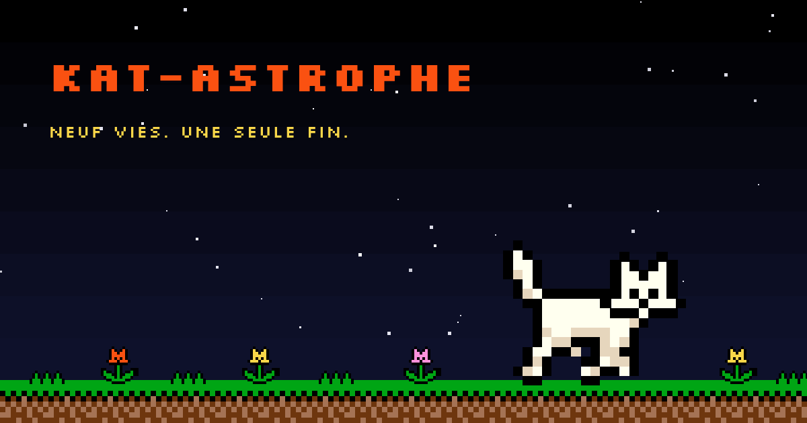
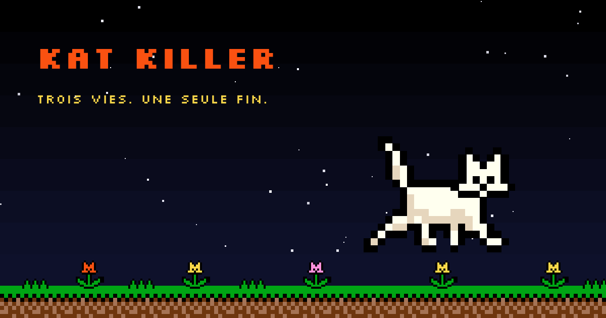
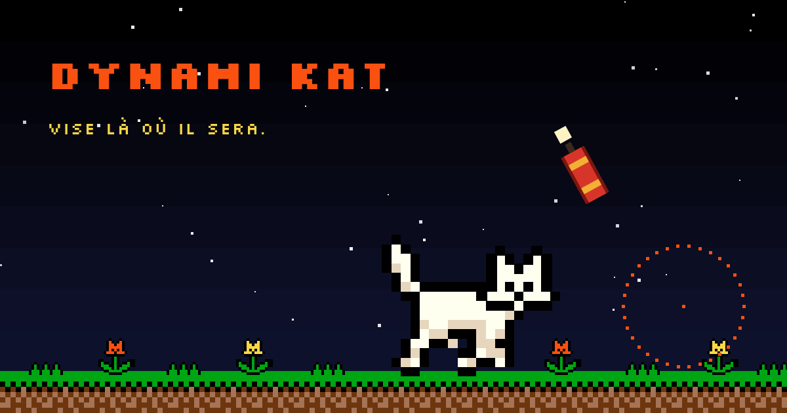

Le même pré, la même nuit, trois règles du jeu. Rien à installer.

Neuf vies. Une seule fin.
Un réticule, un chat, neuf vies. Il court plus vite et bondit plus haut à chaque fois.
JOUER
Trois vies. Une seule fin.
Un chat qui passe vivant coûte une vie. Fleur jaune : une vie rendue. Rouge : une de moins. Mauve : rien.
JOUER
Vise là où il sera.
À la dynamite. Le bâton met neuf dixièmes de seconde à retomber : vise devant, pas dessus.
JOUER